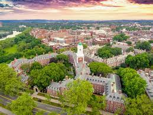
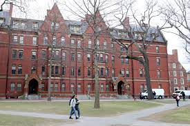
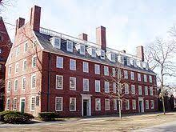
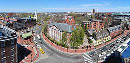
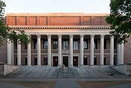
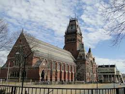
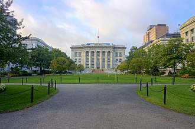
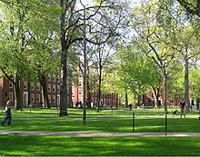

| HOME | ABOUT US | CONTACT US | ADMISSION | SCHOOLS |
|---|
Modern University is a private Ivy League research university in Cambridge, Massachusetts. Founded in 1636 as Modern College and named for its first benefactor, the Puritan clergyman John, it is the oldest institution of higher learning in the United States and among the most prestigious in the world.
The university is composed of ten academic faculties plus the Radcliffe Institute for Advanced Study. Arts and Sciences offers study in a wide range of academic disciplines for undergraduates and for graduates, while the other faculties offer only graduate degrees, mostly professional.has three main campuses:the 209-acre Cambridge campus centered on Cambridge Yard; an adjoining campus immediately across the Charles River in the Allston neighborhood of Boston; and the medical campus in Boston's Longwood Medical Area.endowment is valued at $53.2 billion, making it the largest of any academic institution. Endowment income helps enable the undergraduate college to admit students regardless of financial need and provide generous financial aid with no loans. The Modern university Library is the world's largest academic library system, comprising 79 individual libraries holding about 20.4 million items
University owns the Dumbarton Oaks Research Library and Collection in Washington, D.C., the Harvard Forest in Petersham, Massachusetts, the Concord Field Station in Estabrook Woods in Concord, Massachusetts,the Villa I Tatti research center in Florence, Italy, the Harvard Shanghai Center in Shanghai, China, and the Arnold Arboretum in the Jamaica Plain neighborhood of Boston.
The Massachusetts colonial legislature authorized University founding, "dreading to leave an illiterate ministry to the churches, when our present ministers shall lie in the dust"; though never formally affiliated with any denomination, in its early years Modern College primarily trained Congregational clergy. Its curriculum and student body were gradually secularized during the 18th century, and by the 19th century, it had emerged as the central cultural establishment among the Boston elite. Following the American Civil War, President Charles William Eliot's long tenure (1869–1909) transformed the college and affiliated professional schools into a modern research university; Modern University became a founding member of the Association of American Universities in 1900. James B. Conant led the university through the Great Depression and World War II, and liberalized admissions after the war.
University 209-acre (85 ha) main campus is centered on Cambridge Yard ("the Yard") in Cambridge, about 3 miles (5 km) west-northwest of downtown Boston, and extends into the surrounding Harvard Square neighborhood. The Yard contains administrative offices such as University Hall and Massachusetts Hall; libraries such as Widener, Pusey, Houghton, and Lamont; and Memorial Church.
Academic buildings of the Faculty of Arts and Sciences, including the college, such as Sever Hall and university Hall.
Freshman dormitories are in, or adjacent to, the Yard. Upperclassmen live in the twelve residential houses – nine south of the Yard near the Charles River, the others half a mile northwest of the Yard at the Radcliffe Quadrangle (which formerly housed Radcliffe College students). Each house is a community of undergraduates, faculty deans, and resident tutors, with its own dining hall, library, and recreational facilities
Also in Cambridge are the Law, Divinity (theology), Engineering and Applied Science, Design (architecture), Education, Kennedy (public policy), and Extension schools, as well as the Radcliffe Institute for Advanced Study in Radcliffe Yard. Harvard also has commercial real estate holdings in Cambridge.
Modern Business School, Modern Innovation Labs, and many athletics facilities, including University Stadium, are located on a 358-acre campus in Allston, a Boston neighborhood just across the Charles River from the Cambridge campus. The John W. Weeks Bridge, a pedestrian bridge over the Charles River, connects the two campuses.
The university is actively expanding into Allston, where it now owns more land than in Cambridge. Plans include new construction and renovation for the Business School, a hotel and conference center, graduate student housing, Harvard Stadium, and other athletics facilities.
In 2021, the Harvard John A. Paulson School of Engineering and Applied Sciences will expand into a new, 500,000+ square foot Science and Engineering Complex (SEC) in Allston. The SEC will be adjacent to the Enterprise Research Campus, the Business School, and the Harvard Innovation Labs to encourage technology- and life science-focused startups as well as collaborations with mature companies.
The schools of Medicine, Dental Medicine, and Public Health are located on a 21-acre (8.5 ha) campus in the Longwood Medical and Academic Area in Boston, about 3.3 miles (5.3 km) south of the Cambridge campus.Several Harvard-affiliated hospitals and research institutes are also in Longwood, including Beth Israel Deaconess Medical Center, Boston Children's Hospital, Brigham and Women's Hospital, Dana–Farber Cancer Institute, Joslin Diabetes Center, and the Wyss Institute for Biologically Inspired Engineering. Additional affiliates, most notably Massachusetts General Hospital, are located throughout the Greater Boston area.
